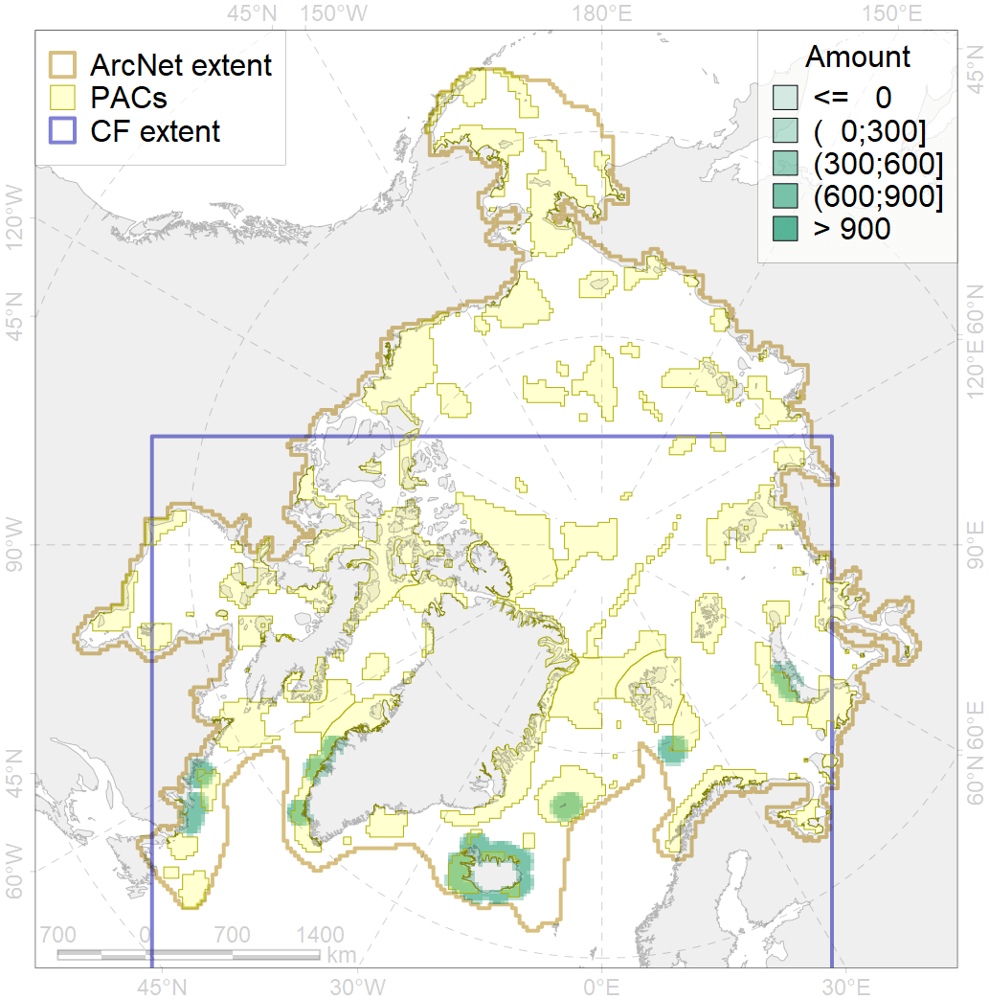
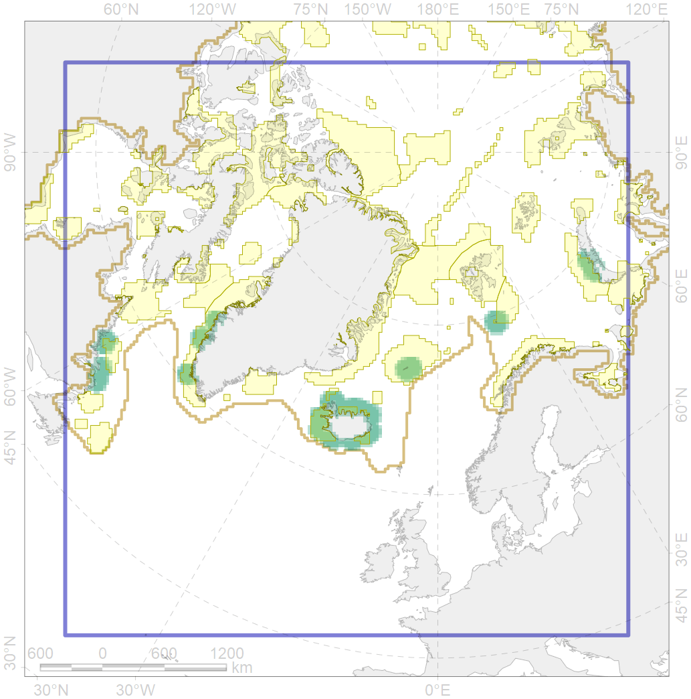

6101

| CF ID | 6101 |
| CF Name | Common murre (Uria aalge aalge) breeding grounds buffer feeding area |
| Time Period | 1975-2015 |
| Source(s) | Circumpolar Seabird Data Portal http://axiom.seabirds.net/maps/js/seabirds.php?app=circumpolar#z=2&ll=NaN,0.00000, Lock et al 1994, Nettleship 1980, Nettleship et al 1984, Birkhead & Nettleship 1987, Christensen et al 2016, Jensen & Rasch 2010 |
| Seasonality | May-August |
| Depth Horizon | <0 m |
| Methodology | Buffer around colonies |
| Author Name | Gavrilo, Tertitski |
| Notes | |
| Conservation Target Set in the Scenario | 0.36 |
| Conservation Target Achieved in the Scenario | 0.510 (Scenario: 141.8%) |
| PAC ID | Proportion in the PAC | Contribution to ArcNet Target Achievement | PAC’s Contribution to the Achieved Target |
|---|---|---|---|
| 21 | 5.7% | 14.8% | 10.4% |
| 31 | 2.5% | 6.9% | 4.8% |
| 34 | 9.9% | 27.0% | 19.1% |
| 37 | 1.0% | 1.6% | 1.1% |
| 38 | 11.9% | 28.2% | 19.9% |
| 39 | 2.5% | 6.0% | 4.3% |
| 40 | 0.6% | 1.1% | 0.8% |
| 41 | 2.4% | 3.9% | 2.8% |
| 44 | 11.4% | 29.9% | 21.1% |
| 77 | 3.4% | 7.6% | 5.4% |
| 78 | 0.1% | 0.2% | 0.1% |
| inner | 51.5% | 127.2% | 89.7% |
| outer | 48.5% | 14.6% | 10.3% |